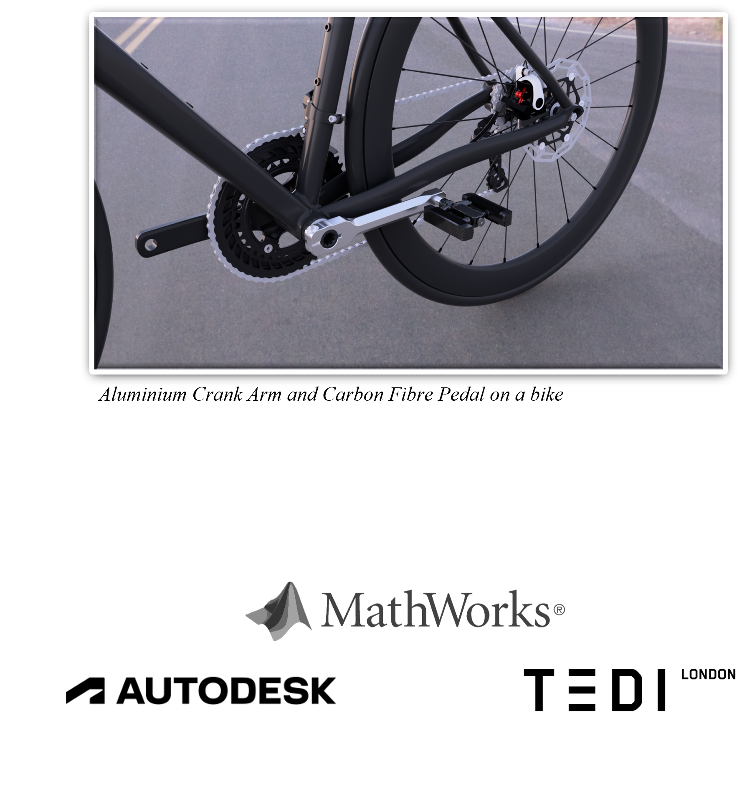
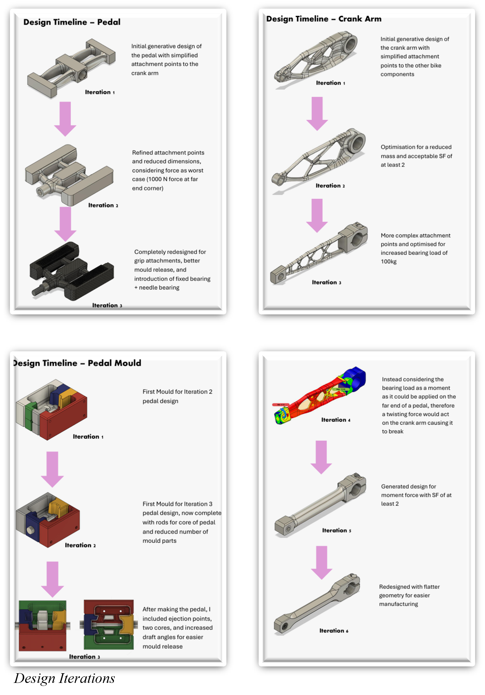
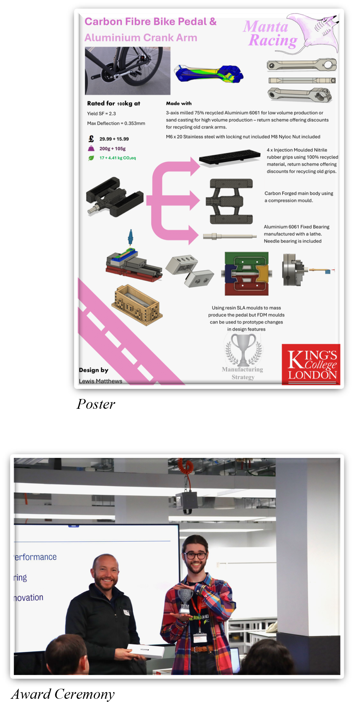
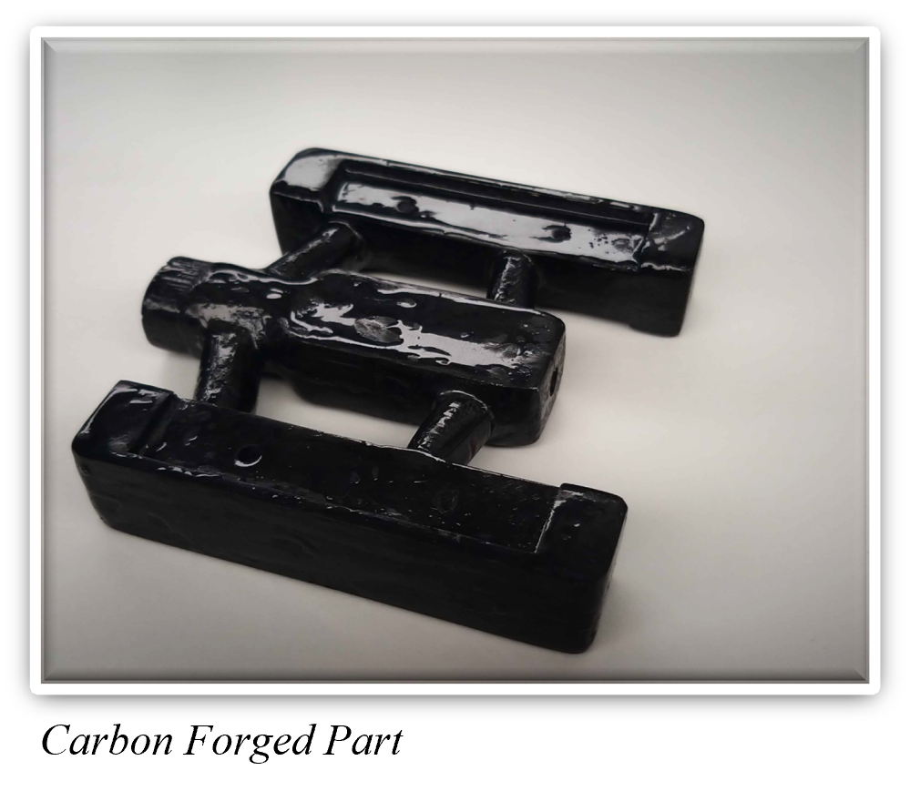

Carbon Forged
Bike Pedal
&
Aluminium Crank Arm
Overview

Project Type: Individual
Duration: 8 weeks
Time: Winter 2024 (3rd Year)
The task was to design any product and design the tools in order to manufacture that product, all whilst considering the economics and feasibility of the overall item.
I decided to design a carbon fibre pedal and aluminium crank arm. I wanted to experiment with a relatively new and niche form of manufacturing for the pedal as it could use recycled carbon fibre in the form of a carbon forged part.
Targeting the racing market allowed me to pinpoint a goal of reduced mass with suitable safety factors, which led me to my optimised design.
Then by manufacturing the part I was able to further improve and refine the process. The final products that the cohort designed would then be reviewed by various judges from Autodesk, MathWorks, and TEDI-London.
Design Process

The pedal and crank arm went through multiple iterations due to economic and manufacturing considerations required. Initially, the crank arm started with an intricate, complex, and aesthetically pleasing design. But due to the lack of feasibility when manufacturing from a 3-axis mill, I simplified the design. This sacrificed the optimisation of the mass; this project highlighted the importance of design trade-offs and how to consider not just the manufacturer but the end user as well.
The pedal consists of a carbon fibre body that is manufactured from a compression mould, an aluminium fixed bearing that the body rotates around, nitrile rubber grips, and a pressure fit bearing (standardised).
In order to manufacture the body, I designed a 3D printed multipart mould which consisted of a plunger and the subtraction of the complex pedal shape. After my first attempt at manufacturing the pedal using the mould, I was able to improve the design of the mould, not only improving the quality of the produced part but also making the layering and removal process far easier.
Manufacturing
 The manufacturing process for the carbon fibre body consists of 3D printing a PLA multiple part mould with draft angles between 2 and 3 degrees to allow for easier release. The mould is covered in release wax and then is filled with chopped carbon fibre tow and an epoxy resin mixture; it is then compressed and left to harden at room temperature for 24 hours. After manufacturing the part, I discovered that PLA was too weak for this application, so PETG should have been used instead with a higher infill density, as the mould fell apart after removal of the carbon-forged part.
The manufacturing process for the carbon fibre body consists of 3D printing a PLA multiple part mould with draft angles between 2 and 3 degrees to allow for easier release. The mould is covered in release wax and then is filled with chopped carbon fibre tow and an epoxy resin mixture; it is then compressed and left to harden at room temperature for 24 hours. After manufacturing the part, I discovered that PLA was too weak for this application, so PETG should have been used instead with a higher infill density, as the mould fell apart after removal of the carbon-forged part.
Manufacturing the part myself allowed me to understand what parts of the mould needed to be improved, for example, adding more ejection points and printed cores going all the way through the mould.
End Result

By the end of the project, I was able to manufacture a successful carbon fibre pedal. During the final demonstration day I won the Best Manufacturing Strategy award, presented by Autodesk.
The module improved my skills as a designer and showed me how to consider the manufacturing process of a product, not just the considerations of sustainability and the environment, but how the design could be optimised to make the manufacturing process more efficient and feasible at a large scale.
